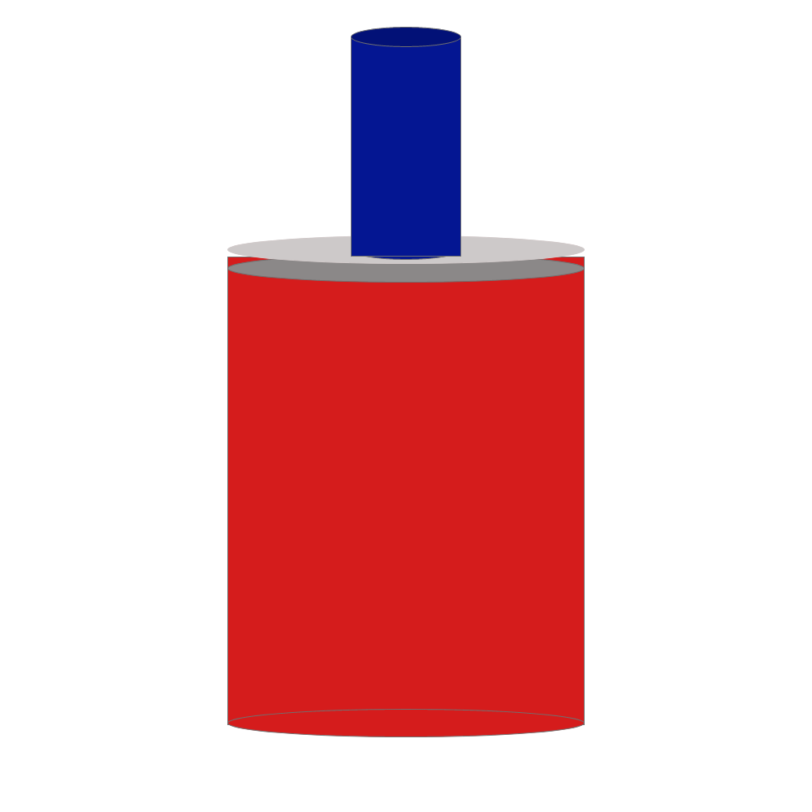

Exercise 13
- 1. Open XD
- 2. Create a blank sheet that 1000px by 1000px
- 3. Find the center of you page. This is where most of you work is going to line up with.
- 4. Create an ellipse that’s 440px in width and 35px in height
- 5. Go to fill and change the white default color to the color of blood
- 6. Next create a rectangle that same width as the ellipse, but change the height of 577px
- 7. Match the rectangle color to ellipse.
- 8. Move the rectangle 280 on the x-axis and 316 on y-axis
- 9. Create another ellipse that identical to the fist. However, change the color to a mid-gray
- 10. Now move this new ellipse up on the y-axis to 313px
- 11. Create a third ellipse that identical to the first. However, change the color to a light gray
- 12. Now move this new ellipse up on the y-axis to 290px
- 13. Create an ellipse that 136px in width and 25 in height
- 14. Change the color to midnight blue
- 15. Place this blue ellipse in the middle of the light gray ellipse
- 16. Next create a rectangle that same width as the blue ellipse, but has the height of 271px
- 17. Match the rectangle color to ellipse.
- 18. Move the rectangle 432 on the x-axis and 45 on y-axis
- 19. Create another ellipse that identical to the fist. However, change the color to a even darker blue
- 20. Move the darker blue ellipse to 432 on the x-axis and 33 on the y-axis
- 21. Export you final image as png
- 22. Email me the png file to rcoope13@masonlive.gmu.edu
Original
.png)
Drawing #1

Drawing #2